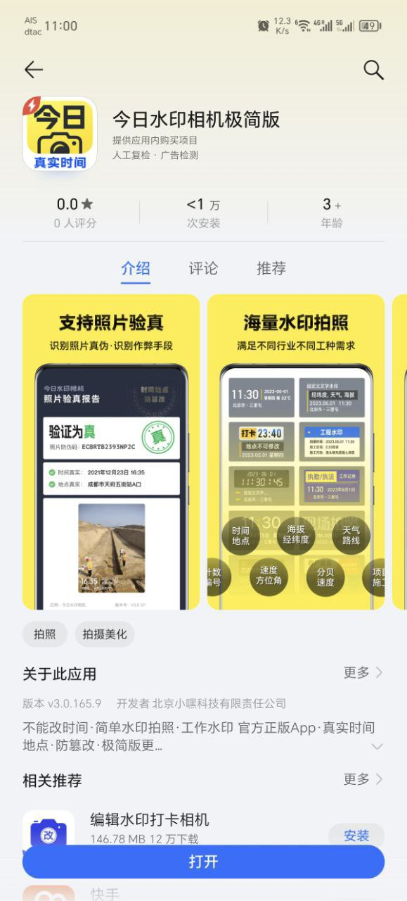
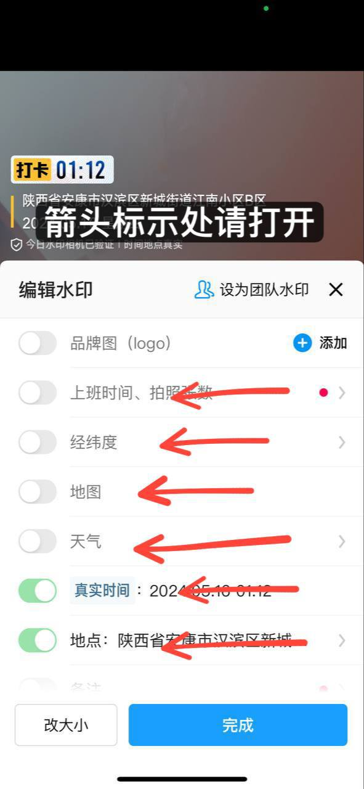
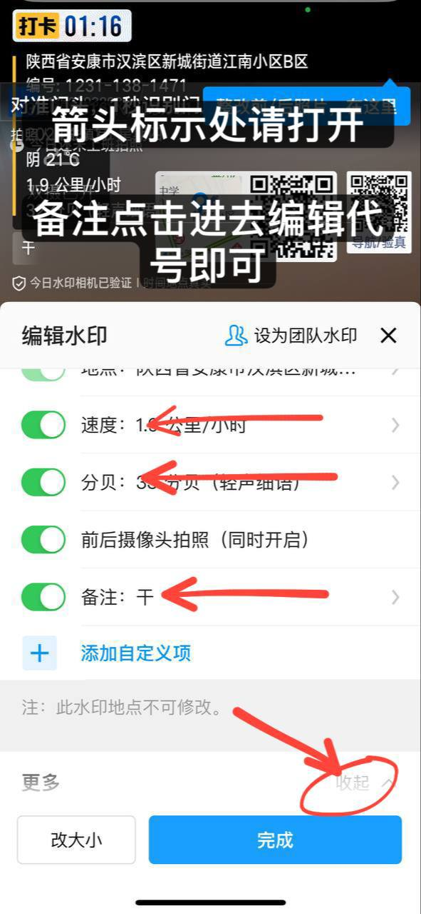
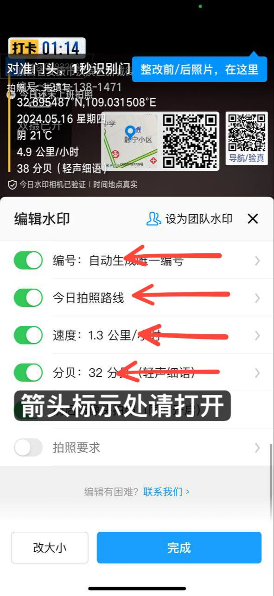
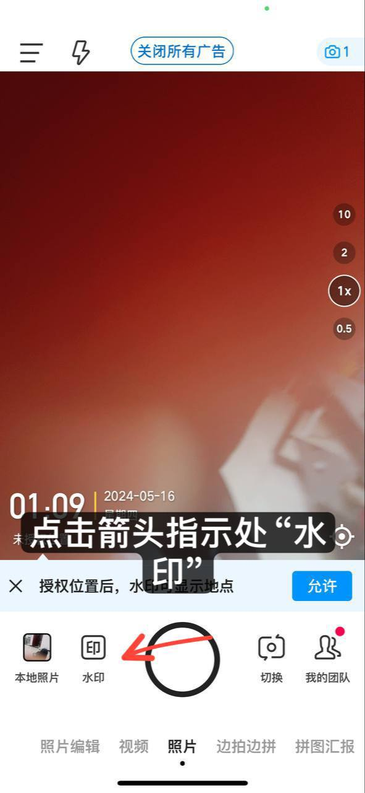
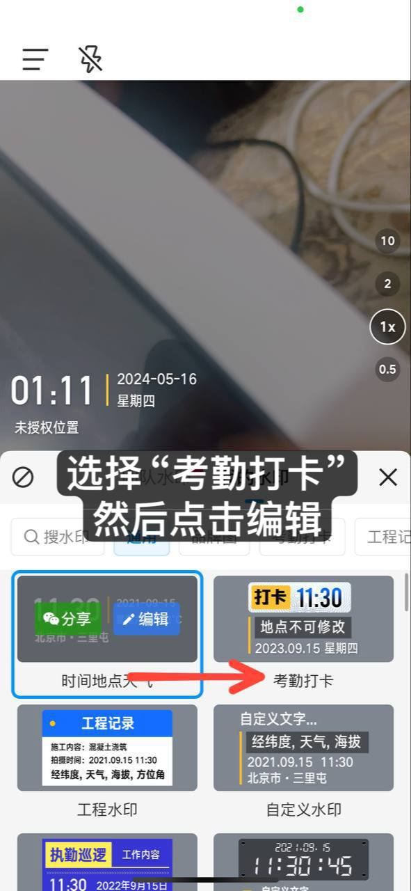
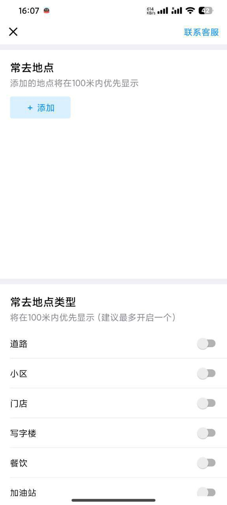
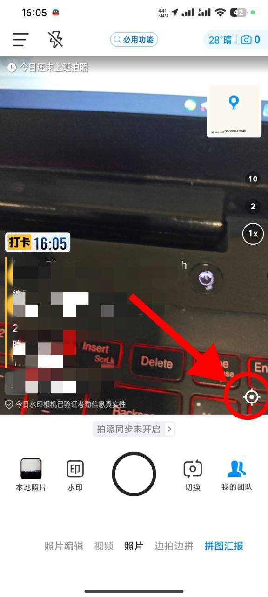

动动计步器和今日水印相机
安卓可以在应用宝下载
苹果可以直接商店下载
 安卓手机 最新版水印不好用可下载此版本 苹果手机 最新版不好用可下载此版本 -----------------------      水印相机设置如下： 点击“水印” 选择“考勤打卡”点击编辑 功能全开 （备注里填JY➕个人代号） （上班时间 经纬度 地图 天气 时间 地点速度 分贝 编号 今日拍照路线） PS：有些功能往下拉点击右下角“展开” 功能全开 设置完毕！！！ ---------------------   重点！重点！提醒一下，把优先展示的选项都关闭掉。否则水印相机地址会异常，定位的都是门店，道路，而非真实的地址，也涉嫌规避地址库。
注意 :做单的时候每拍摄完一个视频 就点一下刷新 最近小地图不动导致全扣的情况每天都有 手机不要开任何定位软件与VPN GPS异常 导致 ‘’经纬度‘’不变‘’小地图‘’不变 交单之前 一线每个视频点进去 快进看下小视频的小地图有没有动 一整个视频没有动的就删掉这个视频